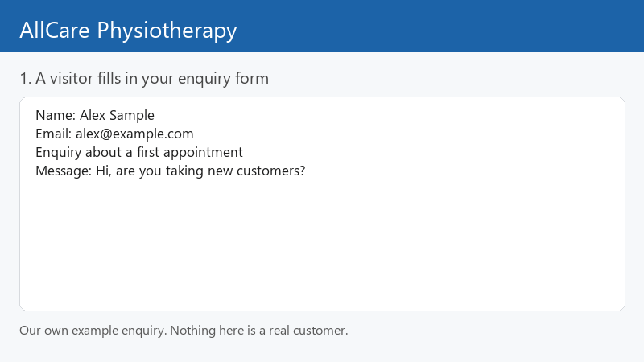

Prepared by ShivX Labs. Not your live system: a short demonstration of what we would set up for you.
Whoever fills in your enquiry form gets an instant reply as your business, with your booking link, and you are notified.

In our own test run of this automation the reply was readable 22.1 seconds after the form was submitted (we check for new enquiries about every 20 seconds, so expect about a minute at most).
The demonstration uses your business name and our own example enquiry. It is an illustration drawn from that real test run, not a recording of your website or of a real customer.